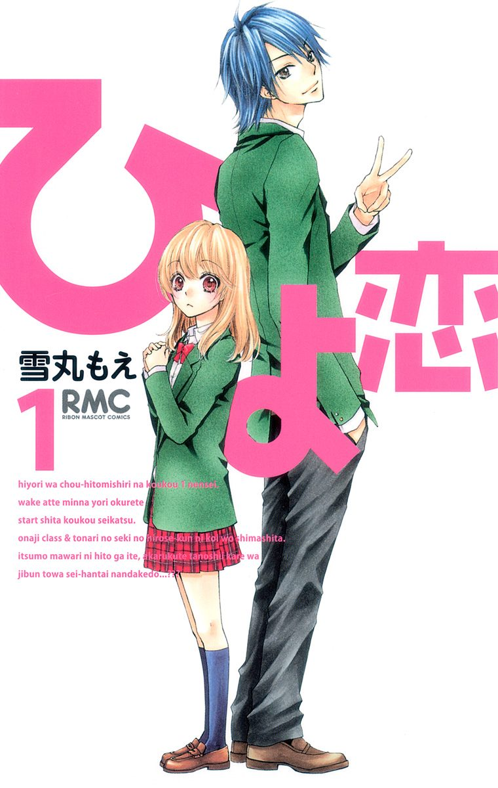
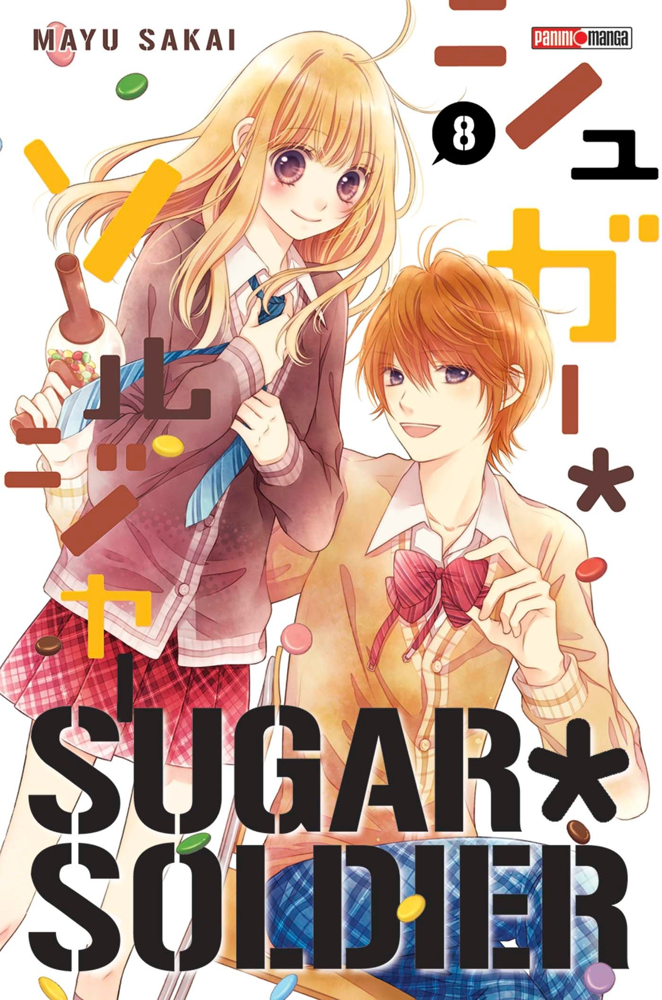
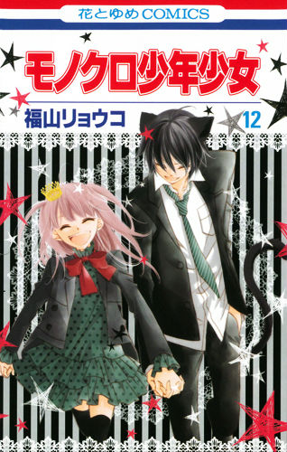

INFORMACIÓN
Titulo:
Hiyokoi
Autor:
Yukimaru
Genero:
Romance, Drama, Comedia, Vida Escolar, Vida Cotidiana
Hiyori, una chica pequeña y tímida, va a la escuela por primera vez en un año desde que un accidente la dejó hospitalizada. Síguela mientras lucha con sus habilidades sociales, trata de hacer amigos y tal vez incluso un poco más ...? Hiyori, una chica pequeña y tímida, va a la escuela por primera vez en un año desde que un accidente la dejó hospitalizada. Síguela mientras lucha con sus habilidades sociales, trata de hacer amigos y tal vez incluso un poco más ...?

INFORMACIÓN
Titulo:
Sugal Soldier
Autor:
Sakai Mayu
Genero:
Romance, Drama, Comedia, Vida Escolar, Shoujo
Makoto esta condenada a ser la sombra de su hermana mayor Rika ya que es modelo de portada, nadie la notaba así que decidió empezar de nuevo en la preparatoria, pero pronto todo se complico cuando Rika fue a buscarla a la escuela todos enseguida fuera a prestarle atención a ella, en un arranque de desesperación huyo y un chico la siguió, pronto ella decidió gracias a el ser mas fuerte.

INFORMACIÓN
Titulo:
Monokuro
Autor:
Fukuyama Ryoko
Genero:
Romance, Drama, Comedia, Fantasía, Vida Escolar
Kureha Mimachi, una chica de 15 años que acaba de transferirse a Shiritsu Kenhono High School. Sin embargo, hay algo extraño en esta escuela… En realidad es una escuela donde los príncipes y princesas de tipo bestia van... A pesar de que Kureha es humana, ella está allí como una manera de ayudar a los estudiantes a llevar sus vidas en paz con los seres humanos y tiene el papel como el "conejo". ¿Será capaz de sobrevivir sin ser comida por los estudiantes ...? Sólo el tiempo y sus guardaespaldas ocultos será capaz de responder a eso...